The reactions in series example from the previous section was useful as an introductory tool. However, the model was very simple, so much that using PyDAS is almost certainly overkill. In this section we will develop and solve a more complicated problem. The problem is complex enough that solving it using pure Python code is time consuming, so we will show how to accelerate the solve using Cython (which you already have installed if you are using PyDAS).
The problem of interest in this section is a classic problem from fluid dynamics/transport phenomena: diffusion through a one-dimensional thin membrane. The governing differential equation, called the diffusion equation, is (in dimensionless form)
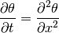
where 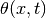 is the “concentration” of the diffusing substance,
 is time, and
is time, and  is position in the membrane. Since we are
working in dimensionless units we will take the membrane width to be unity,
giving us a domain of 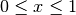.
is position in the membrane. Since we are
working in dimensionless units we will take the membrane width to be unity,
giving us a domain of 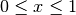.
The diffusion equation requires one initial condition and two boundary conditions. We will start with none of the substance in the membrane, so
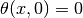
is the initial condition. We will fix the concentration at both boundaries using the boundary conditions
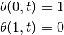
For completeness we note that this problem has an analytical solution:
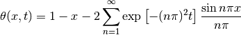
Note
The code for this implementation can be found in the examples/diffusion/python directory. To run, use the command python examples/diffusion/python/diffusion.py.
In general we recommend that you begin by drafting your solution in pure Python. This lets you more quickly establish that your code is working as expected. If the resulting code is running fast enough for your purposes, then you haven’t wasted any time with unnecessary optimization. However, if the resulting code does run very slowly, it is not difficult or time consuming to convert it to Cython. We will utilize this paradigm for this example, which will also enable us to assess the sort of speed increase one might expect from Cythonization.
As with the previous example, the first step is to rewrite the problem as a
DAE system in general form. We can only have one independent variable in
our DAE system; for this we will choose time because it only has one initial
condition. For the spatial coordinate we discretize into a regular grid of
 points, with constant spacing 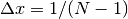 between the
grid points. Thus the function is replaced with a set of
variables 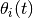, where the subscript indicates a unique grid
point.
points, with constant spacing 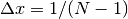 between the
grid points. Thus the function is replaced with a set of
variables 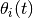, where the subscript indicates a unique grid
point.
We use the finite difference method to approximate the spatial second derivative at each grid point.
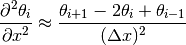
The result is a system of coupled ordinary differential equations
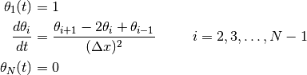
with corresponding initial condition
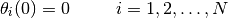
(This approach is called the method of lines.) Finally we convert the above into general DAE form:
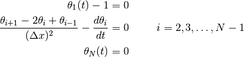
Now that we have the DAE system in general form, we can draft the code that solves it. We will again use DASSL to solve this problem. As before, we develop a class that derives from the DASSL class in the pydas module, implementing a residual function based on the equations above. The complete class – only 25 lines! – is shown below:
import numpy
from pydas import DASSL
class DiffusionModel(DASSL):
"""
A class for solving the diffusion equation in a 1D thin membrane. The
attribute `N` is the number of grid points to use to discretize the
spatial direction.
"""
def __init__(self, N=10):
self.N = N
def residual(self, t, y, dydt):
delta = numpy.zeros(y.shape[0], numpy.float64)
# The grid point spacing
dx = 1.0 / (self.N - 1)
# Internal nodes
for i in range(1, self.N-1):
delta[i] = (y[i+1] - 2 * y[i] + y[i-1]) / (dx * dx) - dydt[i]
# Left boundary (x = 0)
i = 0
delta[i] = y[i] - 1.0
# Right boundary (x = 1)
i = self.N - 1
delta[i] = y[i]
return delta, 0
What remains is to write code that instantiates an object of the above class, initializes the model with the appropriate initial conditions, and generates the solution. This code is given below. Unlike the simple example from the previous section, here we use the advance() method (instead of the step() method) to get solution data only at a set of desired time points. The solver will take as many steps as necessary to reach the desired time, then interpolate if it oversteps that time.
import numpy
from model import DiffusionModel
if __name__ == '__main__':
# The times at which to obtain the solution
tlist = numpy.array([10**i for i in range(-6, 1)], numpy.float64)
# The number of grid points to use to discretize the spatial dimension
N = 501
# Set initial conditions
t0 = 0.0
y0 = numpy.zeros((N), numpy.float64)
y0[0] = 1
# Initialize the model
model = DiffusionModel(N=N)
dydt0 = - model.residual(t0, y0, numpy.zeros((N), numpy.float64))[0]
model.initialize(t0, y0, dydt0)
# Integrate to get the solution at each time point
t = []; y = []
for t1 in tlist:
model.advance(t1)
t.append(model.t)
# You must make a copy of y because it is overwritten by DASSL at
# each call to advance()
y.append(model.y.copy())
# Convert the solution vectors to numpy arrays
t = numpy.array(t, numpy.float64)
y = numpy.array(y, numpy.float64)
Note that we are once again able to provide consistent initial values for the derivatives 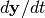 using the residual function.
Running the above code and plotting the results gives the following series of concentration profiles that are consistent with the analytical solution:

Note
The code for this implementation can be found in the examples/diffusion/cython directory. To run, use the command python examples/diffusion/cython/diffusion.py.
Running the Python implementation takes some time. Profiling reveals that our residual() method clocks in at 110 s on this particular computer. This may or may not be considered “slow” depending on your target application, but let’s see how fast we can make it by switching to Cython.
Cython is a language very similar to Python, but with added syntax to enable compilation to efficient C code. In particular, much of the speed boost comes from simply declaring the type of the variables being used. For numpy arrays, this enables fast array access using pointer arithmetic. Since we have a lot of array lookups in our residual function, we anticipate the potential for a significant speed boost. But first we have to code it.
Fortunately, our Python code serves as an excellent starting point. (It is a stated goal of the Cython project that they be able to compile as much unmodified Python code as possible, and as of Cython 0.14 they are doing a pretty good job of this.) From our profiling analysis we know that the residual() method is by far the bottleneck of the code. It’s not so much that the function is slow (though it is), but that it is called more than 35000 times by DASSL. Thus we only need to Cythonize the DiffusionModel class.
We will abstain from a detailed discussion of the Cython syntax here, and instead refer you to the generally excellent Cython documentation for this. Put briefly, we must do the following:
The new DiffusionModel class is only slightly longer than before:
import numpy
cimport numpy
from pydas cimport DASSL
cdef class DiffusionModel(DASSL):
"""
An extension type for solving the diffusion equation in a 1D thin membrane.
The attribute `N` is the number of grid points to use to discretize the
spatial direction.
"""
cdef public int N
def __init__(self, N=10):
self.N = N
def residual(self, double t, numpy.ndarray[numpy.float64_t, ndim=1] y, numpy.ndarray[numpy.float64_t, ndim=1] dydt):
cdef Py_ssize_t i
cdef double dx
cdef numpy.ndarray[numpy.float64_t, ndim=1] delta
dx = 1.0 / (self.N - 1)
delta = numpy.zeros(y.shape[0], numpy.float64)
# Internal nodes
for i in range(1, self.N-1):
delta[i] = (y[i+1] - 2 * y[i] + y[i-1]) / (dx * dx) - dydt[i]
# Left boundary (x = 0)
i = 0
delta[i] = y[i] - 1.0
# Right boundary (x = 1)
i = self.N - 1
delta[i] = y[i]
return delta, 0
The block of code used to initialize and solve is completely unchanged from before.
Lastly, we need a way to compile the .pyx file above. One way is to use Python’s distutils functionality. Below is a valid setup.py file for this purpose:
import numpy
if __name__ == '__main__':
from distutils.core import setup
from distutils.extension import Extension
from Cython.Distutils import build_ext
# The Cython modules to setup
ext_modules = [
Extension('model', ['model.pyx'], include_dirs=[numpy.get_include()]),
]
# Run the setup command
setup(
cmdclass = {'build_ext': build_ext},
ext_modules = ext_modules
)
To execute the above, issue a command like
$ python setup.py build_ext --inplace
from the directory containing all of the relevant files.
Running the Cythonized version of the model is much faster, and gives completely identical output as the pure Python implementation. Profiling analysis results in a time of 0.71 s for the residual() method, a speed increase of over 150x! Of course, the amount of speed boost you get depends heavily on how your residual function is constructed, but gains of an order of magnitude or more are fairly common.